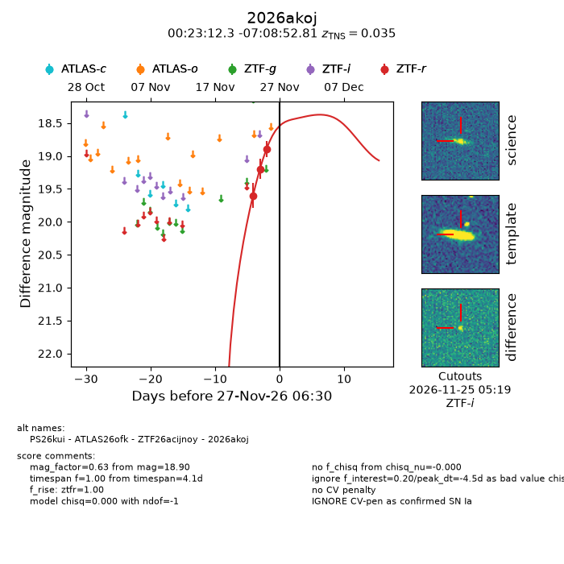
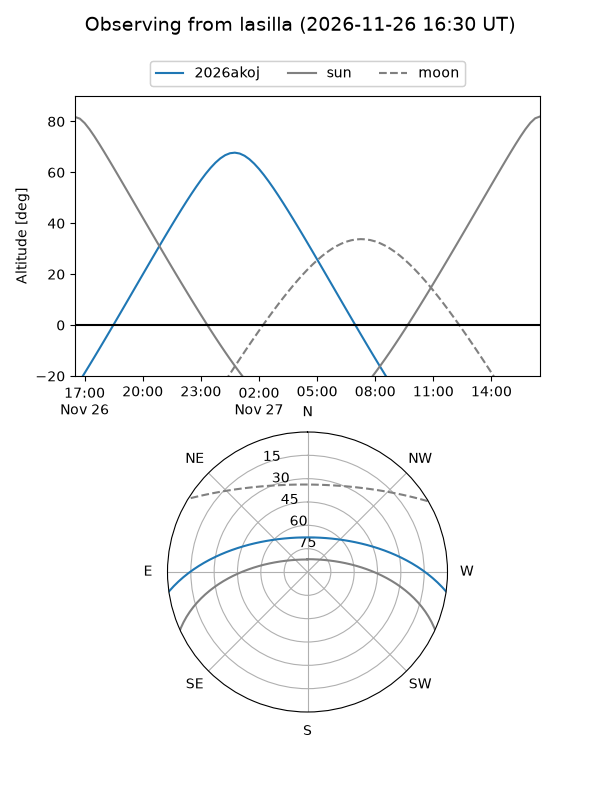
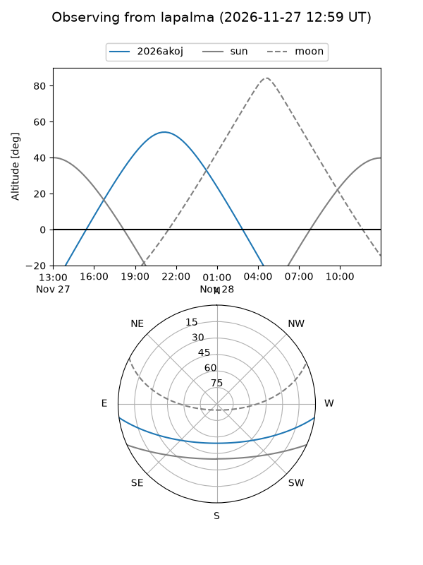
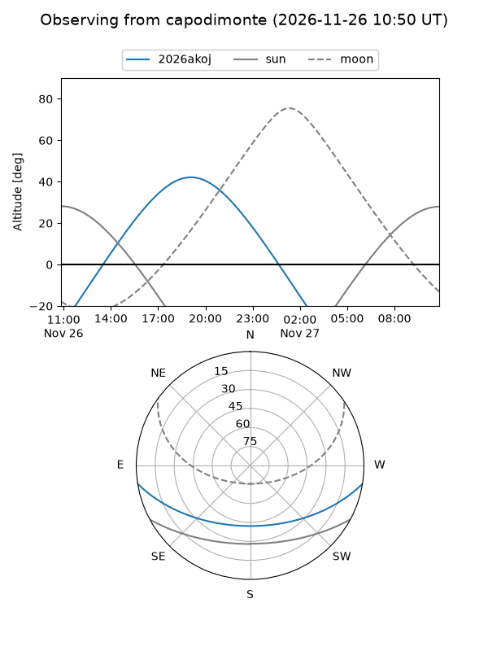
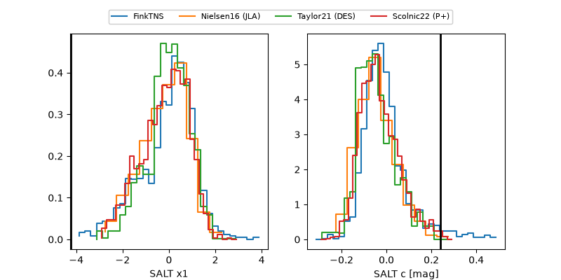

2026akoj
Target 2026akoj at 2026-11-27 06:32
Aliases and brokers:
FINK-ZTF: ztf.fink-portal.org/ZTF26acijnoy
Lasair-ZTF: lasair-ztf.lsst.ac.uk/objects/ZTF26acijnoy
ALeRCE-ZTF: alerce.online/object/ZTF26acijnoy
YSE-PZ: ziggy.ucolick.org/yse/transient_detail/2026akoj
TNS name: wis-tns.org/object/2026akoj
Direct TNS query: direct search
alt names
ZTF26acijnoy (ztf,fink_ztf)
2026akoj (tns,yse)
ATLAS26ofk (atlas)
PS26kui (panstarrs)
Coordinates:
equatorial (ra, dec) = 5.8014,-7.14800
equatorial (HMS+DMS) = 00:23:12.33,-07:08:52.81
galactic (l, b) = (103.1114,-68.92629)
Flags:
TNS type: SN Ia
TNS redshift: 0.0350
peak dt: -4.5
Photometry:
last ztfr=18.90
3 ztfr detections
Lightcurve

Visibility



Additional plots
